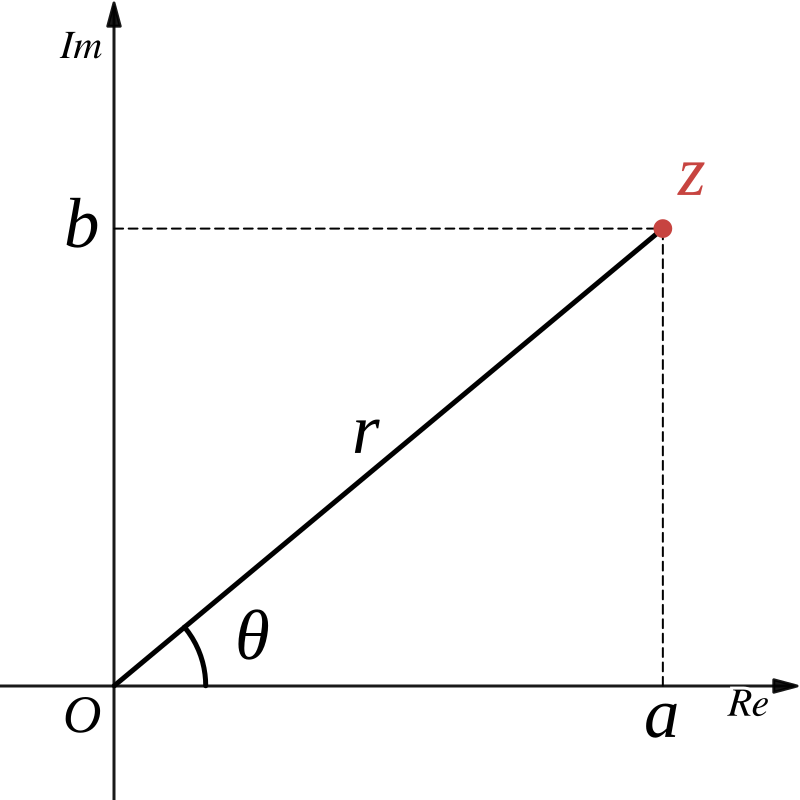

極形式
極形式の定義
\(z=a+bi~(a,b\in\mathbb{R})\) は \(|z|=r\) とし、実軸からの回転角を \(\theta\) とすると、下の図のように書けます。

このとき
であることから
複素数 \(z=a+bi~(a,b\in\mathbb{R})\) に対して、\(\theta=\arctan\dfrac{y}{x}\) とするとき
と表せて、これを \(z\) の極形式という。
偏角
複素数 \(z=r(\cos\theta+i\sin\theta) ~(r\gt0)\) に対して
と表し、これを \(z\) の偏角という。
ある１つの偏角を \(\theta\) とすると、一般に
と表されるため、偏角は範囲を限定することが多いです。 例えば、\(-\pi\lt\arg z\le\pi\) や \(0\le\arg z\lt2\pi\) のように制限します。 範囲を \(-\pi\lt\arg z\le\pi\) と制限するとき、これを偏角の主値といい、大文字で
と書きます。